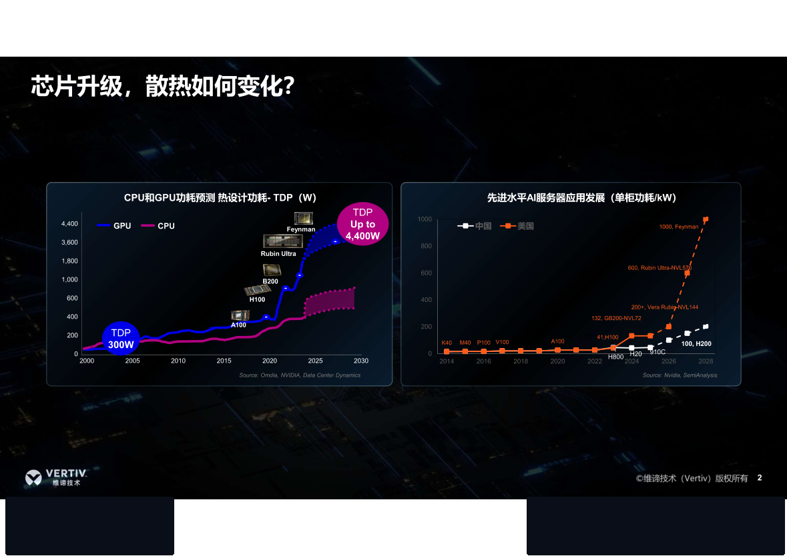
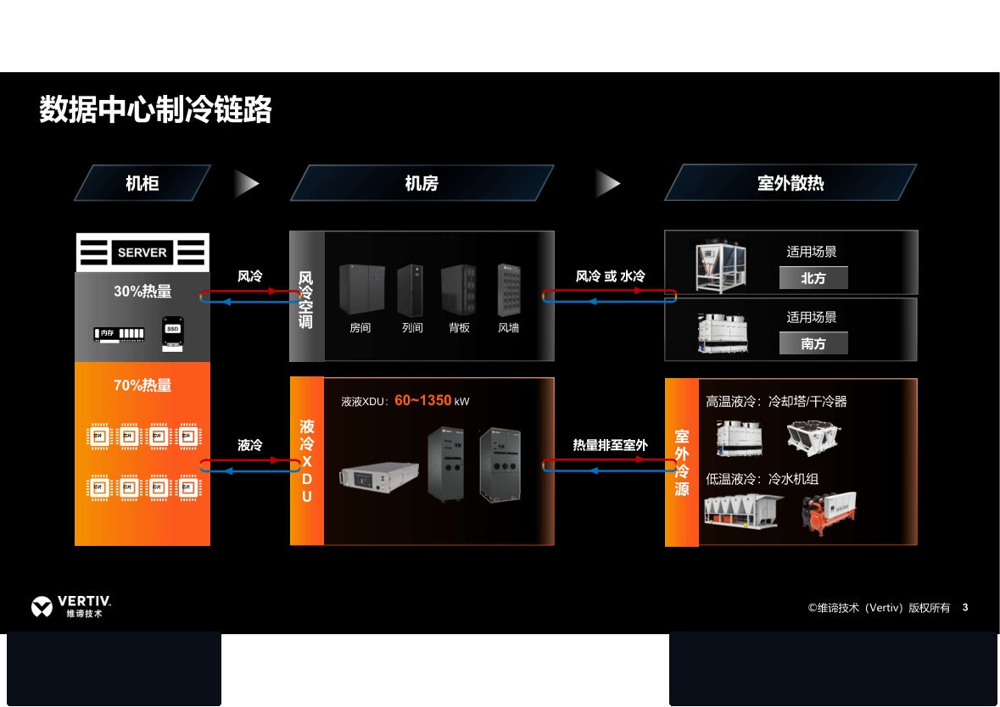
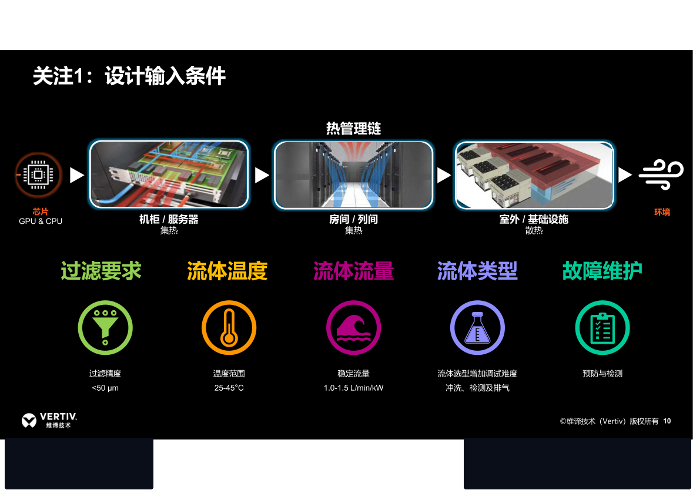
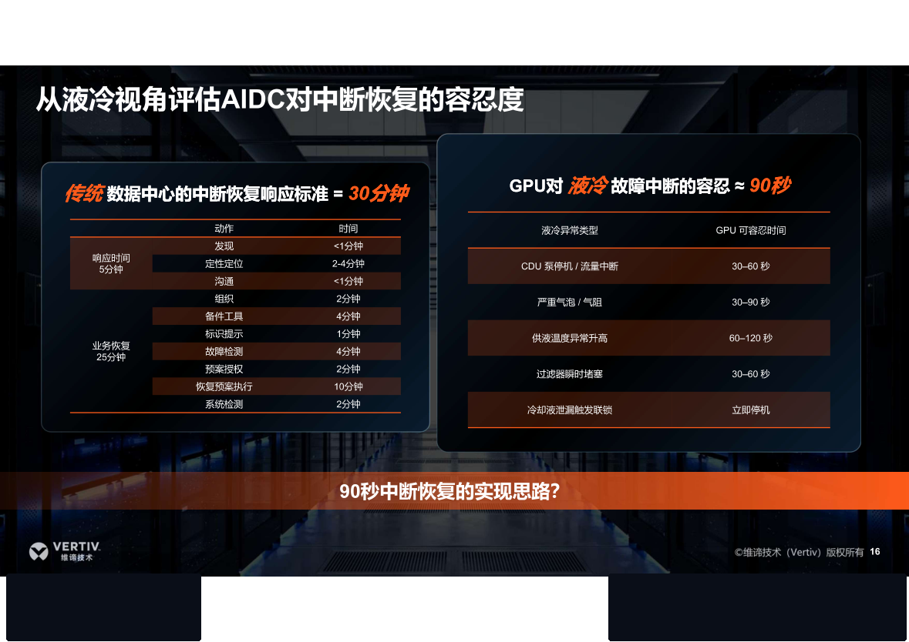
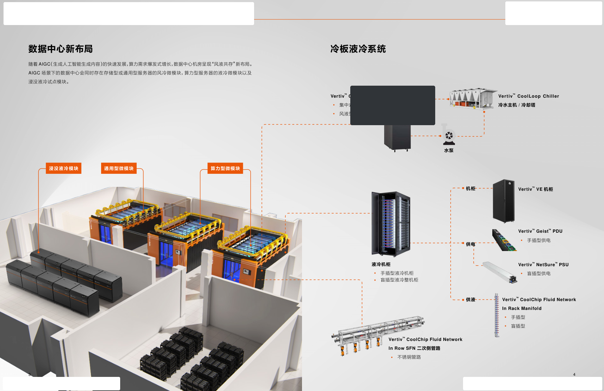
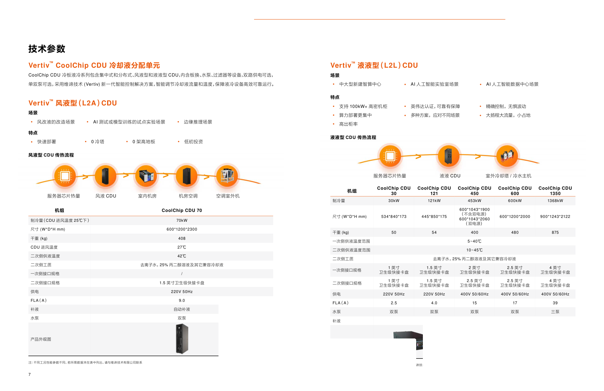

1. 范围、结论与使用限制
一句话：维谛把“液冷底座”做成产品族 + 冷源拓扑 + 补冷 + 管路/机柜/换液服务的完整链路；公开规格在 70 kW L2A 与 30/121/450/600/1350/2300 kW L2L 上很完整，但121 与 450 kW 之间没有行级 SKU。对 NVIDIA GB300 NVL72（公开 142 kW、OEM 峰值 155 kW、约 90/10 混合冷却），单柜更贴 200 kW 级 L2L，多柜共母管才轮到 600/1350/2300 kW。
1.1 论证结构（四步，逐层收窄）
| 步 | 要回答 | 依据类型 | 本文件位置 |
|---|---|---|---|
| ① 为什么必须重做底座 | 功率到哪了？混合冷却比例是多少？失冷能撑多久？ | OEM 规格 + 原图趋势 | 2.2 原图摘录、7. GB300 校核 |
| ② 行业规范怎么说 | 水温等级语义、CDU 该按什么硬指标评 | 中立 ASHRAE 第 5 版、OCP Deschutes | 2.4、2.5 |
| ③ 产品能否达标 | 架构、设计输入、铭牌、二次侧、工厂能力 | 厂商原图 + 公开数据表 | 3、4、5、6 |
| ④ 怎么选 | 按场景定形态，按 OEM 校核，守住禁止事项 | 工程判断 | 7、8、9 |
1.2 四个必须先对齐的数
| 项目 | 说明 |
|---|---|
| 材料 A | 维谛技术《Vertiv CoolChip CDU 冷板液冷解决方案》，文号 E-X6216519-0825，©2025-08。本地可读摘录 assets/src_pdf/coolchip.txt。 |
| 材料 B | 《23 - How to get AI ready 重构AI算力工厂的液冷底座 - 0808.pdf》。文字层为空（扫描幻灯），v1.1 已按页渲染入库 assets/src_pdf_pages/ai_ready/，页码与数字一律按原图抄录。目录三章：液冷架构选择 / 液冷实施关键 / 液冷服务变革。 |
| 互联网补强 | Vertiv 全球产品页（含 CDU 2300）、CoolChip Family DS、CDU 70/600 手册；CoolIT CHx；Schneider/Motivair；华为 FusionCol600-L；nVent RackChiller；英维克/申菱；Supermicro/LITEON；NVIDIA RA / Lenovo LP2357。 |
| 不做的事 | 不把宣传冷量相加；不把 L2A 70 kW 写成 GB300 生产基线；不把卫生级卡盘口径直接套到未冻结的 ICD；不给未公开的美元/kW。 |
2. 证据基线：两份源材料 + 行业规范
第 2 章只做一件事——把「可引用的东西」和「不可引用的东西」分开。2.1–2.3 是厂商材料（能力证据），2.4–2.5 是中立规范（评判标尺）。标尺优先于彩页。
2.1 材料 A · CoolChip CDU 方案册（可核原文）
方案册不是单一 CDU 数据表，而是冷板液冷系统产品包：CDU + 液冷机柜 + In-Rack Manifold + In-Row SFN + 移动换液 + CoolLoop 冷机/冷塔 + 补冷空调。
| 册内主题 | 原文要点 | 对标含义 |
|---|---|---|
| 价值主张 | 极致节能、风液混合、全面可靠；服务 AIGC 与双碳 | 卖的是链路，不是单机 kW |
| 机房新布局 | 风冷微模块、液冷微模块、浸没试点共存 | 与 NVIDIA“fully liquid-cooled”营销语并存时，仍须留残余风冷 |
| 风液混合 | 冷板带走约 50–95%，其余须补冷 | 宣传区间。GB300 Lenovo 写约 90/10，设计按 OEM |
| 冷源三方案 | 同源冷塔 / 同源冷机 / 不同源（液冷一套 + 风侧另一套） | 不同源初投资高、水温适配好；无冷机方案节水/分期更好 |
| 补冷三组合 | 冷冻水空调 / 动态双冷源 / 混动双擎（CoolPhase） | 册内用星级对比，非正式保证点 |
| 可靠功能 | 双泵双电源监测与自动切换、智能补液、全路径漏液（机柜+CDU+二次侧环管）、T/P/F 与温湿度/防凝露 | 行业行级 CDU 的标配清单 |
| L2A vs L2L | L2A：风改液、0 冷塔、0 架高地板、低初投、实验室/边缘。L2L：新建智算、100 kW+、高出柜率、NVIDIA 认证 | GB300 生产部署只应 L2L |
| 二次侧网络 | 不锈钢环管、流量均分、定位漏检、单机柜故障半径、模块预制 | 故障域设计比 CDU 本体更决定可用性 |
| 机柜/歧管 | 手插或盲插；UQD08 / UQD04 / UQDB04；6/12/18 口；42/48/52U | Lenovo GB300 公开 UQDB04，接口族可对上，数量须 ICD |
| 换液 | 移动式在线换液，过滤、7 寸屏、失压过压保护 | SAT/运维工装，不是冷量设备 |
2.2 材料 B · How to get AI ready / 液冷底座（原图已核）
| 原图页 | 原文要点 | 对标含义 |
|---|---|---|
| p.2 芯片升级 | GPU TDP：A100≈400W → H100≈700W → B200≈1000W → Rubin Ultra≈3600W → Feynman 宣称至 4400W。单柜：H100≈41 kW → GB200 NVL72 132 kW → Vera Rubin NVL144 200+ kW → Ultra NVL576 600 kW → Feynman 1000 kW/柜。来源标注 Omdia / NVIDIA / SemiAnalysis。 | 趋势图，不是订单保证。GB300 公开 142 / OEM 155 落在 132 与 200+ 之间。 |
| p.3 制冷链路 | 机柜液冷 70% + 风冷 30%。机房：风侧房间/列间/背板/风墙；液侧液液 XDU 60–1350 kW。室外：高温走塔/干冷，低温走冷机。 | 维谛通用示意。禁止用 70/30 替换 GB300 90/10，也禁止取消 CRAH。 |
| p.5–6 架构选择 | 先问兼容性。风/液看规模、服务器、风液比与水温；高/低温看冷源、架构、PUE。同源：高温干冷/塔 + 双冷源 + 液液 CDU；低温冷机 20–28℃ 冷冻水末端或 30–38℃ 水冷末端；另有氟液 CDU（风冷冷凝器 + 风机盘管）。非同源：风冷+液冷自由组合。 | 与方案册三冷源红蓝管同一套故事。GB300 生产基线走液液 CDU。 |
| p.7–8 高低温 / 无水 | 过去：高水温干冷器/冷却塔。未来：改冷机，并可在二次侧加小冷机。无水方案：氟泵冷凝器 + 氟液 CDU；示例柜 37.5 kW/R（风 15 + 液 22.5），进风 24℃ / 出风 37℃。 | 37.5 kW 是中密兼容示例，不是 GB300 155 kW 生产柜。 |
| p.10 设计输入 | 热管理链：芯片 → 机柜集热 → 列间集热 → 室外散热。五项：过滤 <50 μm；流体 25–45℃；比流量 1.0–1.5 L/min·kW；工质决定冲洗/检测/排气难度；故障维护强调预防与检测。 | OEM Table 27 为 0.39–1.18 L/min·kW，禁止用 1.0–1.5 反代。本项目过滤取严 25 μm。 |
| p.11 SuperPOD | 7 MW；6×1.2 MW Blackwell SuperPOD。每 POD 1152 kW：液冷 832 kW（72%）+ 风 320 kW（28%）。48 台 130 kW 算力柜 + 48 台 14 kW 配套柜。CDU XDU1350；风侧 CW205；冷机 FH3135。冷却 UPS 240 kVA 2N。 | 72/28 是这个参考设计。宣传“1350 带 8×GB300”须按 OEM 同时热与 N+1 重算。 |
| p.12–13 预制交付 | 结构模块 2400×2000 → 单元 3500×2000 → 48 英尺预制 Run（管/母线/光纤一次装完）。Smart Run 一列：两端 CDU + 8 GPU 柜 + 网络柜。50 MW / 20 POD 宣称 80–120 天，对比行业平均 6 个月。 | 评价维谛，交付速度与预制深度是产品族之外的第二竞争力。 |
| p.14 FAT | 1:1 复制现场厂验：预制 SFN、XDU1350B、缓冲罐、膨胀罐、冲洗/减振套件。能力叙事：50 MW IT / 35 MW 液冷、1.6 MW SuperPOD FAT、5 个月出货闭环、全球服务。 | 方案册彩页不画这些附件，底座原图画了。SAT 必须按图补。 |
| p.16 失冷窗口 | 传统机房中断恢复标准 = 30 分钟。GPU 对液冷中断容忍 ≈ 90 秒：泵停/断流 30–60 s；气阻 30–90 s；供液超温 60–120 s；滤芯瞬时堵塞 30–60 s；漏液联锁立即停机。 | 90 秒出处即本页维谛原图，不是二手博客；仍不是 NVIDIA 官方秒级值。 |
2.3 原图摘录（已去厂家铭牌 / Logo）

图 2-1 底座 p.2：芯片 TDP 与单柜 kW 代际（已去页脚品牌）

图 2-2 底座 p.3：通用制冷链路 70/30，XDU 60–1350 kW

图 2-3 底座 p.10：过滤 <50 μm、25–45℃、1.0–1.5 L/min·kW

图 2-4 底座 p.16：传统 30 分钟 vs GPU 液冷约 90 秒

图 2-5 方案册：风液共存机房 + CDU/环管/机柜实物（已去铭牌）

图 2-6 方案册：L2A 70 与 L2L 30–1350 参数表（柜门标已遮）
2.4 中立标尺 A · ASHRAE 液冷水温等级（第 5 版语义）
ASHRAE 第 5 版把液冷等级按供液上限温度重命名，编号即上限（℃），所有 W 类下限统一 2℃。这条改动直接决定招标怎么写：设施水系统按 W 类设计，IT 设备按 W 类申报，两者可对。
| 新名 | 旧名 | 供液上限 | 排热含义 | 与本项目关系 |
|---|---|---|---|---|
| W17 | W1 | 17℃ | 多数时段需冷冻水 | 过冷，PUE 差 |
| W27 | W2 | 27℃ | 中等水温 | 可用但自然冷时长少 |
| W32 | W3 | 32℃ | 自然冷时长明显增加 | 国内部分气候区经济点 |
| W40 | 第 5 版新增 | 40℃ | 填补 W32 与 W45 之间 | 多数厂商实际能力落点 |
| W45 | W4 | 45℃ | 塔 / 干冷可全年排热，多数气候可免冷机 | GB300 属此类（供水 2–50℃）；CoolChip 全球页标 W45 |
| W+ | W5 | >45℃ | 开放等级 | 路线，不作当前保证 |
另一侧的锚：NVIDIA 在 Vera Rubin POD 参考架构中表述 MGX 机架全系按 45℃ 温水进液设计，45℃ 进液约 55℃ 出液——这让 W45 从「可选高温」变成事实基线。
2.5 中立标尺 B · OCP Project Deschutes 2 MW CDU 硬指标
这是目前最可引用的非厂商 CDU 规格：OCP 公开（Google 主导），2025-09 发布、v1.0 2026-02，已有多家厂商公开对标。它把「CDU 好不好」拆成可验收项，正好补上厂商彩页只给冷量 kW 的缺口。
| 类别 | OCP 规格要求 | 为什么重要 | 对照本项目 |
|---|---|---|---|
| 容量 / 端温差 | 2000 kW @ 3℃ ATD | ATD 越小越难做；无 ATD 的 kW 不可比 | 比 Vertiv 大 L2L 的 4℃、CoolIT 的 5℃ 更严 |
| 二次流量 / 压差 | 约 500 GPM；二次可用 约 80–90 psi | 压差决定能带多长环管、多少柜 | CoolIT 宣称 53 psi、部分「1350」类约 25 psi |
| 泵冗余 | N+1（泵及附件）、无密封泵 | 90 秒窗口靠备泵自投 | Vertiv 双泵 / 1350 三泵；华为双泵 |
| 电源 | 至少 1N 冗余，期望 2N；每泵回路独立 | 单电源 CDU 在 A 级机房是单点 | Vertiv 450 分单/双电源两种高度 |
| 热插拔 | 冗余部件须在连续运行中可更换 | 不允许为换泵而停 IT | 招标须写明前/后维护面 |
| 过滤 | 主过滤 25–44 μm + 旁流 0.2 μm（约 3 GPM） | 两级过滤才控得住微生物与颗粒 | 本项目主过滤取 25 μm，并应加旁流 |
| 漏液 | 漏液绳 + PLC，分 3 区 | 决定故障半径与联锁范围 | 须与 Tray/Rack 触点硬接线 |
| 排气 / 定压 | 气水分离器 + 直流式膨胀罐 | 气阻是 30–90 秒级失冷诱因 | 彩页不画，必须进 P&ID |
| 压力 | 工作 0–130 psi，130 psi 泄压 | 与 QD 静压等级必须成套 | Lenovo 公开 QD 静压 30 psi，须分清部位 |
| 工质 / 水质 | DI 水与 PG25；在线 pH 与电导率 | 水质在线化是运维前提 | 与 GB300 的 DI/PG25 一致 |
| 计量 | 流量计 ±0.5%；两侧温压、泵速与功率遥测 | 没有计量就无法验收 95% 换热 | 与国标均流 ≤10% 校核配套 |
| 材料 | 不锈钢、铜、EPDM | 相容性决定长期腐蚀风险 | 与方案册 304 环管一致 |
提醒：OCP 是 2 MW 颗粒的规格，不能直接套到单柜 200 kW 机型；引用它是为了统一「评什么」，不是统一「多大」。
3. AI 算力工厂的液冷底座（应具备什么）
把两份材料与设施参考架构叠在一起，底座可以收成六层。缺任何一层，CDU 彩页再完整也无法交付工厂。
| 层 | 内容 | Vertiv 产品包对应 | 行业通行要求 |
|---|---|---|---|
| L0 芯片/托盘 | 冷板、盲插、Tray/Rack 漏液 | 不生产 GPU；机柜侧手插/盲插整柜 | NVIDIA：Tray+Rack 漏液；热量约 90% 进水 |
| L1 机柜歧管 | Manifold、UQD、顶/底进水 | CoolChip Fluid Network In-Rack；UQD04/08/B04 | Lenovo 公开 UQDB04、QD 静压 30 psi |
| L2 CDU（TCS/FWS 隔离） | 板换、泵、过滤、补液、温控 | CoolChip L2A/L2L 全系列 | 双泵、水质、±0.5～1℃ 控制、群控 |
| L3 二次侧网络 | 列间环管、均流、隔离、漏检 | In-Row SFN；单机柜故障半径 | GB/T 48023 支路均流≤10% |
| L4 一次冷源 + 补冷 | 塔/干冷/冷机；CRAH/RDHx/混动 | CoolLoop + CoolPhase / 动态双冷源 | RD110：N+1、暖水 37/47、冷却 UPS |
| L5 交付与流体服务 | 冲洗、注液、换液、化验、备件 | 移动换液装置；全球 310+ 服务中心 | ASHRAE/华为：FWS/TCS 分表，季度化验 |
图 3-1 液冷底座分层与 Vertiv 三种冷源拓扑。L2A 把“FWS 冷源”缩成机房空气，只适合改造/试点。
4. Vertiv CoolChip 产品族拆解
4.1 中国方案册铭牌（E-X6216519-0825）
工况随端温差、工质、一次水温度变化。下表是册内印刷值，不是 GB300 保证点。
| 型号 | 型式 | 制冷量 | 外形 W×D×H (mm) | 干重 | 接口 一次/二次 | 供电 / FLA | 泵 |
|---|---|---|---|---|---|---|---|
| CDU 70 | L2A 列间 | 70 kW（进风 25℃；二次供液 42℃） | 600×1200×2300 | 408 kg | — / 1.5″ 卫生卡盘 | 220 V / 9.0 A | 双泵 |
| CDU 30 | L2L 机架 | 30 kW | 534×840×173 | 50 kg | 1″ / 1″ | 220 V / 2.5 A | 双泵 |
| CDU 121 | L2L 机架 | 121 kW | 445×850×175 | 54 kg | 1.5″ / 1.5″ | 220 V / 4.0 A | 双泵 |
| CDU 450 | L2L 列间 | 453 kW | 600×1043×1900（单电源）/ 2060（双电源） | 400 kg | 2″ / 2.5″ | 400 V / 15 A | 双泵 |
| CDU 600 | L2L 列间 | 600 kW | 600×1200×2000 | 480 kg | 2.5″ / 2.5″ | 400 V / 17 A | 双泵 |
| CDU 1350 | L2L 列间/周边 | 1368 kW | 900×1243×2122 | 875 kg | 4″ / 4″ | 400 V / 39 A | 三泵 |
全系列印刷：一次侧供液 5–40℃，二次侧供液 10–45℃；二次侧工质去离子水、25% 丙二醇及其他兼容液；自动补液。L2L 大机 400 V 50/60 Hz。
4.2 全球产品页增量（2026-09 检索）
| 条目 | 全球页 / 手册 | 与中国册差异 | 取舍 |
|---|---|---|---|
| CDU 2300 | SL-80005（05/26）：2300 kW @ 4℃ ATD；2400×1200×1200 mm；湿重 1793 kg；一次/二次 6″ 卫生法兰；标称功耗 47.8 kW；一次过滤厂配 500 μm，二次 25 或 50 μm；±1℃；Modbus RTU/TCP。EMEA 2026-05-26 与 CoolChip Fluid Network Row Manifolds 同期上市。 | 中国 2025-08 册未列；全球页已成系列顶档 | 超大规模工厂选项；单 GB300 柜用不上。列间歧管与方案册 SFN 同族。 |
| 标称端温差 | L2L 121/600/1350/2300 写 4℃ ATD；L2A 70 写 11℃ ATD（另有手册：出液 42℃ / 回风 27℃） | 中国册 70 写进风 25℃ | 比较冷量必须绑 ATD，禁止裸 kW 横比 |
| CDU 100 | Datacloud 2025 EMEA：4U 机架 L2L 100 kW | 中国册是 30 与 121，无 100 | 区域 SKU 不同，询价对料号 |
| 过滤 | 集成 50 μm，部分型号 25 μm；可热插拔 | 册内只写“过滤器” | 冷板项目按 25 μm 取严 |
| 控制 | 二次侧 ±1℃；压差或流量模式；7 寸彩屏；漏液；W45 | 册内写智能流量/温度，未给 ±1℃ | ±1℃ 是产品族能力；FAT 仍可按 ±0.5℃ 谈 |
| 族谱 | CoolChip = 下一代 Liebert XDU | 国内旧材料仍见 XDU 70–1.4 MW | 招标勿 XDU/CoolChip 混写同一保证 |
4.3 机柜与二次侧网络（方案册 p.6）
| 部件 | 公开规格 | 注意 |
|---|---|---|
| 手插型液冷机柜 | 600×1200/1400×2000 mm（深度按服务器定制）；预装 manifold；PDU 供电；背板空调可选 | 高度 2000 与 Lenovo 2294 / 国标典型 2200 都不同，布置按订单柜 |
| 盲插型液冷整机柜 | 600×1200×2200（含背板空调深 1350）；预装电源模块 + 直流母排 | 更接近 NVL72 盲插/母排形态 |
| In-Rack Manifold | 方管 40×40 / 50×50，304；6/12/18 口；UQD08 或 UQD04 手插，UQDB04 盲插；下接管；42/48/52U | GB300 常用盲插 UQDB04，口数不是 18 就等于 18+9 Tray |
| In-Row SFN | 不锈钢预制环管；均流；定位漏检；单机柜故障半径 | 可用性关键在阀门与环网，不在 CDU 铭牌 |
5. 能力阶梯：谁覆盖哪一段
图 5-1 公开 CDU 冷量阶梯。GB300 单柜液冷选型约 150 kW，峰值包络 155 kW，落在 121 与 450 之间。
6. 行业竞品对标矩阵
冷量数字来自各厂公开页或方案册，测试工况不统一。表内“适配 GB300”是工程判断，不是认证清单。NVIDIA 认证/RVL 以厂商当时商务材料为准，本表不代发证书。
| 厂商 / 系列 | 代表型号与公开冷量 | 型式 | 工质 / 水温 | 冗余与控制 | 相对 Vertiv 的位置 | GB300 单柜 |
|---|---|---|---|---|---|---|
| Vertiv CoolChip | L2A 70；L2L 30/100*/121/450/600/1350/2300 kW（*区域 SKU） | 机架 + 列间 + 周边 | DI / PG25；二次 10–45℃；W45；4℃ ATD（大 L2L） | 双泵（1350 三泵）；双电源可选；±1℃；Modbus；漏液；50/25 μm | 基准：链路最全（柜/管/换液/冷机/补冷） | 121 偏紧；450 浪费；70 不能作生产基线 |
| CoolIT CHx | CHx200：200 kW / 4U；CHx1500：1364 kW @ 5℃ ATD；CHx2000 产品页写 2000 kW @ 5℃ ATD、2125 LPM @ 35 psi、750×1200，宣称单台带 12×GB300 NVL72（12×155=1860 kW 有账）。新闻稿曾写 2269 kW / 53 psi，须对同一份数据表。 | 机架 + 高密行级 | W17–W+ | N+1 热插拔；25 μm；群控 20 台；Redfish/SNMP/Modbus；6 MW FAT（厂商） | 单柜 200 kW 补 121–450 空档；行级密度厂商自比“1350” | CHx200 与 150 kW 选型同档；12 柜口径仍须 N+1 |
| Schneider + Motivair | RD110（142 kW/柜，TCS 40/50、FWS 37/47）。2026-06 发布 MCDU-70：单台 2.5 MW，六台可按 4+2 撑 10 MW；产品线 105 kW–2.5 MW。4 月还有 MCDU-45/55（走廊/灰区安装）。 | 设施级 + 超大 CDU | RD110 暖水；CDU 随型号 | CDU N+1；冷却 UPS 2N 5 min（RD110）；EcoStruxure | 强在工厂参考设计与超大颗粒，不补单柜 200 kW 空档 | RD110 对齐 142 kW；MCDU 用于 SU/工厂 |
| 华为 FusionCol600-L / Atlas | L450MA：450/360 kW；二次 40/50、一次 37/45；二次流量 650/520 L/min；扬程 250/180 kPa；一次过滤 50 目、二次 270 目（官网 2026）。Atlas 巡检 Tso<40℃、建议 30/35℃ | 列间 CDU + 超节点液冷门 | DI / 乙二醇 / 丙二醇（公开） | 双泵轮巡/加减载/同开同停；iCooling 不直控物理设备 | 暖水点接近 RD110；二次侧常用 EG，与 PG25/DI 不是一张表 | 可作国内 CDU 对照，不可改 GB300 进水表 |
| nVent RackChiller | CDU100：100 kW @ 6K（一次 100 LPM；经销页，不是早先转写的 125 kW）；CDU800：800 kW @ 4K，800×1200，二次至 950 LPM / 46 psi（厂商发布） | 机架 + 列间 | 二次约 10–70℃；W17–W45 | N+1 泵电；SNMPv3/Modbus | 800 kW 填 600–1350；100 kW 比 121 更紧 | CDU100 不够单柜 150；800 走多柜 |
| Supermicro | 柜内 CDU 至 250 kW N+1 泵；行级至 1.8 MW（最多 8 柜）；L2A Sidecar 200 kW | 柜内 / 行级 / 侧车 | 跟其 GB300 整柜（运行 132–140 kW） | 柜内泵 N+1 | 柜内 250 是另一技术路线，不是 Vertiv 450 的缩小版 | 若订单是 Super 整柜，优先其 CDU 选项 |
| LITEON Sidecar | 约 140 kW In-Row 侧车（GB200 NVL72 展会实拍） | L2A 贴柜 | — | — | 与 Vertiv 70 同类但冷量对 GB200 一代 | GB300 155 kW 峰值不够，除非只作余热/试点 |
| 英维克 | 插框式 CDU 最大 80 kW / 4U；304 管；二次 50 μm；双电源；Modbus/SNMP | 柜内插框 | — | 冗余泵、漏液、自动补液、防凝露 | 对标 Vertiv 30/70/121 的柜内段，不是 450+ | 80 kW 不够 GB300 |
| 申菱 | CDU 200–1800 kW；宣称支持柜功率 ≤140 kW；PUE≤1.15（产品页） | 行级/机房级 | 冷板/浸没/喷淋兼容（宣传） | 全变频泵 | 颗粒覆盖 Vertiv 450–1350 段；柜功率 140 已低于 GB300 峰值 | 冷量段可用，须核 ATD 与 OEM 表 |
6.1 功能清单对标（行级 L2L）
| 功能 | Vertiv CoolChip 册/全球页 | CoolIT 行级 | 华为 L450 / Atlas | nVent 800 | 工厂底座是否必需 |
|---|---|---|---|---|---|
| TCS/FWS 隔离 | 是 | 是 | 是 | 是 | 是 |
| 泵冗余 | 双泵；1350 三泵 | N+1 热插拔 | 双泵 | 冗余无泄漏泵 | 是 |
| 双电源 | 可选（450 分单/双电源高度） | N+1 电源 | 公开未逐项强调 | 工业三相 | A 级 / Tier 3 建议 |
| 自动补液 + 水质监测 | 智能补液；族页写流体取样选项 | 流体完整性设计 | Atlas 工质巡检很严 | 未在摘要强调 | 是 |
| 漏液 | 机柜+CDU+环管 | 智能漏检 | CDU/柜/门巡检 | 本机漏检 | 是（须接到 Tray/Rack） |
| 群控 | 机组通信 | 最多 20 台 | iCooling / NetEco 生态 | Gateway | 多柜工厂必需 |
| 二次侧预制环管 | In-Row SFN 明确产品化 | 方案级 | 超节点有标准管网 | 方案级 | 是（故障半径） |
| 在线换液工装 | 移动换液车 | 服务产品 | 注液/气密程序 | — | 运维加分 |
| 补冷空调同族 | CoolPhase / 动态双冷源 | 弱（专注 DTC） | FusionCol 风侧很强 | RDHx 同族 | 混合冷却必需 |
| 公开协议 | Modbus RTU/TCP | Redfish + SNMP + Modbus | 液冷 CDU 点表公开不全 | SNMPv3 + Modbus | Mission Control 场景偏 Redfish 网关 |
6.2 市场结构与价值量分布（供应策略用）
| 观察 | 数量级 | 口径 | 对选型的含义 |
|---|---|---|---|
| CDU 细分头部 | 约 29.6% | Vertiv 在 CDU 细分市场份额，2025 口径（其液冷整体约 11.3%） | 产能与交付档期是稀缺资源，须早锁产 |
| 全球集中度 | 前五约 90% | 全球数据中心 CDU 厂商合计 | 可选供应商实际很少，双源策略要提前布局 |
| 国产 CDU 龙头 | 约 9.5% | 英维克全球 CDU 份额；已获 NVIDIA NPN Tier1；2025-10 发布对标 OCP Deschutes 的 2 MW 机型 | 可作工厂级第二源，且能整包冷板 + QD + 歧管 |
| 国内智算 CDU | 排名第一 | 申菱环境，赛迪 2024 中国液冷数据中心口径；CDU300 宣称支持 150 kW 柜 | 国产化项目的总包备选；150 kW 正对 GB300 单柜档 |
冷板液冷系统价值量分布（研究口径）
图 6-1 价值量分布（研究口径）。三大件合计 85%，与「CDU 是心脏但不是全部」的结论一致。
7. 对 NVIDIA GB300 NVL72 的适配校核
7.1 冻结口径（2026-09 交叉复核）
| 项 | 公开值 | 出处口径 | 设计动作 |
|---|---|---|---|
| 单柜标称 | 132–142 kW | NVIDIA ERA「up to 142」；HPE 132；Lenovo 135 TDP | 三个数不相加、不取平均，注明来源 |
| 单柜峰值 | 约 155 kW（EDPp） | Lenovo LP2357 | 冷却与母线按峰值包络 |
| 液 / 气 | 90 / 10 | Lenovo 表：算力托盘混合、NVSwitch 全液、机柜辅助约 10% 走风 | 风侧 10%（142 kW 时约 14 kW）必须留 CRAH/RDHx |
| 设施水等级 | W45，供水 2–50℃ | ASHRAE 第 5 版 + MGX 全系 45℃ 温水设计 | 可免冷机；但须核当地湿球与干冷器选型 |
| 流量 | 随水温查表（25℃ 约 59、45℃ 约 177 L/min） | OEM 表 | 温度与流量成对取用，禁止按 10 K 反算 |
| 负载动态 | 机柜 60 → 150 kW / 1–2 秒 | Uptime Institute 观测（第三方） | 控制按动态负载设计；N+1 之上评估 N+2 |
| 母线预留 | 建议按 192 kW provision | HPE QuickSpecs 建议值 | 电与冷同步留余量，避免下一代停机改造 |
| 是否有风冷版 | 无 | NVL72 架构强制液冷 | 「全液冷即取消 CRAH」为错误结论 |
7.2 逐项适配结论
| GB300 约束（本项目已冻结口径） | Vertiv 方案册 | 适配结论 |
|---|---|---|
| 功率：NVIDIA 142 / Lenovo 135–155 / 液冷选型 150，三口径不相加 | L2L“支持 100 kW+”；1350 被宣传带 8 柜 | 单柜不要 70/30；121 kW 低于 150 kW 选型；单柜用 200–250 或 450 降额；8 柜必须 N+1 重算 |
| 液/气约 90/10，禁止取消 CRAH | 冷板 50–95% + 补冷三种组合 | 方向一致。保证点用 90/10，不用 50–95 |
| 入口 25–45℃ 与流量成对查表（45℃→177 L/min） | 二次侧 10–45℃ 产品窗 | 窗能罩住，但 10℃ 不是 GB300 运行点；流量按 OEM 表不是按 10 K 反算 |
| 工质 DI 或 PG25 | DI、25% 丙二醇及其他兼容液 | 对齐。华为 EG 表不得混用 |
| Tray + Rack 漏液 | 机柜+CDU+环管监测 | 能力等价；须硬接线到 OEM 触点，不能只靠 CDU 本机 |
| UQD / 盲插 | UQDB04 盲插选项 | 接头族可对；Cv、数量、顶底进水待 ICD |
| 可用性 Tier 3 / 国内 A 级 | 双泵双电源、环管单柜故障半径 | 单机功能够，工厂级仍要 2N 或 N+1 CDU 列 + 冷源 N+1 |
8. 选型建议与竞争态势
8.1 按场景选底座，不按品牌口号
| 场景 | 推荐形态 | 公开产品例 | 不要做的事 |
|---|---|---|---|
| 实验室 / 风改液 / 无一次水 | L2A 列间或侧车 | Vertiv 70；Super / LITEON sidecar | 用 L2A 承诺 GB300 满配训练 |
| 单柜或 1+1 生产柜 | 200–250 kW L2L，机架或矮列间 | CoolIT CHx200；Super 柜内 250；Vertiv 无此 SKU | 用 121 kW 硬扛 155 kW 峰值 |
| 单列 2–4 柜 | 450–800 kW 列间 N+1 | Vertiv 450/600；nVent 800；华为 450 | 一台 450 带 4×155 且无备机 |
| SuperPOD SU（约 8 柜） | 1.3–2.5 MW 行级/周边 + 群控 | Vertiv 1350/2300；CoolIT 1500/2000；Motivair 2.5 MW；Super 1.8 MW | 用宣传“1 台带 8 柜”替代 N+1 计算 |
| 国内设计院出图 | 上述硬件 + GB 50174 A + YD/T 6358 + 均流/95% 换热 | 见总体报告 v2.2 | 只贴 NVIDIA/ASHRAE 英文页 |
8.2 Vertiv 相对竞品的强弱
| 强 | 弱 / 空档 |
|---|---|
| 冷板链路产品化最完整：CDU+歧管+环管+换液+冷机+补冷+全球服务（310+ 中心、~4000 一线）。 | 中国册在 121 与 450 kW 之间没有行级 SKU，而 GB300 单柜正好落在空档。 |
| L2A/L2L 分型清楚，改造与新建两套故事完整；NVIDIA 认证/RVL 叙事连续。 | 控制协议公开以 Modbus 为主，对 Mission Control / Redfish 要靠网关；CoolIT 把 Redfish 写到产品页。 |
| 二次侧不锈钢卫生卡盘、W45、4℃ ATD 大机、1350 三泵，规格可核。 | 50–95% 热量区间过宽；与 OEM 90/10 混用会误导风侧采购。 |
| 360AI 把电链和冷链捆在一起，适合“工厂级”业主。 | 800 VDC、无水氟液仍是路线，不能当 2026 GB300 标配。 |
8.3 对本项目（2×200 kW L2L）的含义
200 kW 不是 Vertiv 型号，是对着 CoolChip 阶梯算出来的单柜生产空档。对标成立的条件：L2L、DI/PG25、双泵、自动补液、漏液分区、过滤 ≤25 μm、二次侧覆盖 OEM 25–45℃ 查表流量（约 3.5–10.6 m³/h），并且把附件（定压、旁流、PSV、换液口、Redfish 网关）写进 P&ID——这些正是方案册彩页通常不画、却决定能否通过 SAT 的部分。
9. 数据来源、置信度与待补
| 来源 | 用到什么 | 日期 | 置信度 |
|---|---|---|---|
| Vertiv CoolChip 方案册 E-X6216519-0825 | L2A/L2L 分型、70/30/121/450/600/1350 铭牌、10–45℃、DI/PG25、三冷源、补冷星级、UQD、SFN、换液 | 2025-08；摘录已入库 | 高（产品族） |
| 《How to get AI ready 液冷底座》PDF | p.2 功率代际；p.3 70/30 与 XDU 60–1350；p.6 同源/氟液树；p.8 无水 37.5 kW；p.10 五项输入；p.11 7 MW / 72/28 / XDU1350；p.13 Smart Run 80–120 天；p.14 1:1 FAT；p.16 90 秒失冷 | 2025-08-08；原图已入库 | 高（按页渲染抄录） |
| Vertiv 360AI 中文彩页 | 电链/冷链、部署十问、70 / 40–100 / 132 kW 旅程、风液融合、预制约 50% | 2024-08-20 | 中（旅程功率已旧） |
| CoolChip CDU 600/1350/2300 DS SL-80005 | 2300 kW@4℃ ATD、2400×1200×1200、湿重 1793 kg、6″、47.8 kW、25/50 μm | 2026-05（05/26） | 高（数据表） |
| Vertiv EMEA 新闻稿 | CDU 2300 + Fluid Network Row Manifolds 上市 | 2026-05-26 | 高（官方新闻） |
| vertiv.com CoolChip 产品页 | 族谱、±1℃、XDU 换代 | 2026-09-05 | 高 |
| CoolIT CHx200 / CHx2000 产品页 | 200 kW 4U；2000 kW@5℃ ATD、12×GB300 口径、Redfish、20 台群控 | 2026-09 复核 | 高（厂商页；12 柜是宣传） |
| 工商时报 / 优分析 · Motivair | MCDU-70 2.5 MW，105 kW–2.5 MW，六台 10 MW 4+2 | 2026-06-23 | 中高（媒体转官方） |
| CoolChip CDU 70 / 600 手册 | L2A 出液 42℃、回风 27℃、W4/A2；600 双泵、10 L 罐、压差控制 | 公开 PDF | 高 |
| WAIC 2026 / 钛媒体 / 凤凰网转述 | 1350 带 8×GB300、电冷耦合、800 VDC、无水氟液 | 2026 | 中（媒体，非数据表） |
| Schneider RD110；Motivair MCDU-70 | 142 kW 柜、40/50↔37/47、5 min；2.5 MW | 2025–2026 | 高 / 中 |
| 华为 FusionCol600-L450MA；Atlas 巡检 | 450/360 kW、40/50↔37/45；Tso<40℃ | 2026-09 复核 | 高 / 中高 |
| nVent / 英维克 / 申菱 / Supermicro / LITEON | 见第 6 章 | 2026-09 | 中–高（产品页） |
| NVIDIA RA / Lenovo LP2357 | 142 kW、155 kW、90/10、Table 27、UQDB04 | 既有基线 | 高 |
| ASHRAE 第 5 版 / TC 9.9 | W17/W27/W32/W40/W45/W+ 重命名；下限统一 2℃；合规=全温域不降频 | 2021 起，2026-09 复核 | 高（标准） |
| OCP Project Deschutes 规格 | 2 MW @ 3℃ ATD、二次约 80–90 psi、N+1 泵、1N/2N 电源、25–44 μm + 0.2 μm 旁流、漏液 3 区、0–130 psi、DI/PG25、流量计 ±0.5% | 2025-09 发布 / v1.0 2026-02 | 高（公开规格） |
| NVIDIA MGX / Vera Rubin POD | MGX 机架全系按 45℃ 温水进液设计；45℃ 进 / 约 55℃ 出 | 2026 工程博文转述 | 中高（官方博文转述） |
| HPE QuickSpecs / Uptime | 母线建议按 192 kW provision；机柜 60→150 kW 在 1–2 秒内摆动 | 2025–2026 | 中高（厂商建议 / 第三方观测） |
| 第三方研究与财经媒体 | CDU 份额约 29.6% / 9.5%、前五约 90%、赛迪国内排名、成本结构 32/28/25/10/5 | 2025–2026 | 中 非审计，仅作格局判断 |
- 已补：材料 B 原图按页渲染，第 2.2 节改为原文摘录；PPT v1.1 嵌入原图。
- 待补：Vertiv / CoolIT / 华为 授权数据表中的二次扬程、精确过滤目数、群控点数。
- 待补：各厂美元或人民币 /kW（公开基本不报，本文件不编造）。
9.1 版本
| 版本 | 日期 | 说明 |
|---|---|---|
| v1.0 | 2026-09-05 | 首版。整理 CoolChip 方案册；披露 AI ready PDF 不可读并还原工厂底座框架；交叉 Vertiv 全球页与主要竞品；给出 GB300 适配与 121–450 kW 空档结论。 |
| v1.1 | 2026-09-05 | 按页渲染两份 PDF 原图。材料 B 改为原文摘录（70/30、72/28、90 秒、7 MW SuperPOD、五项输入）。PPT 改为图优先，嵌入架构树、产品照片、歧管/环管与 FAT 原图。 |
| v1.2 | 2026-09-05 | 图内厂家铭牌/Logo 已遮盖。交叉 2026-09 公开页：CoolChip 2300 DS、CHx2000 12×GB300 口径、MCDU-70 2.5 MW、华为 270 目、nVent CDU100=100 kW@6K。HTML 嵌入去铭牌原图。 |
| v1.3 | 2026-09-05 | 结构重排：加入 1.1 四步论证结构与阅读路径。补中立标尺层：2.4 ASHRAE 第 5 版 W 类语义（W17–W+，下限统一 2℃，合规=全温域不降频）、2.5 OCP Project Deschutes 2 MW CDU 十二项硬指标。补 7.1 GB300 冻结口径（155 kW 峰值、90/10、W45、1–2 秒摆动、192 kW 母线建议、MGX 45℃）。补 6.2 市场结构与价值量分布（前五约 90%、冷板 32% / QD 28% / CDU 25%）。同步产出 PPT v2.0（27 页，四章结构，每页单一结论）。 |